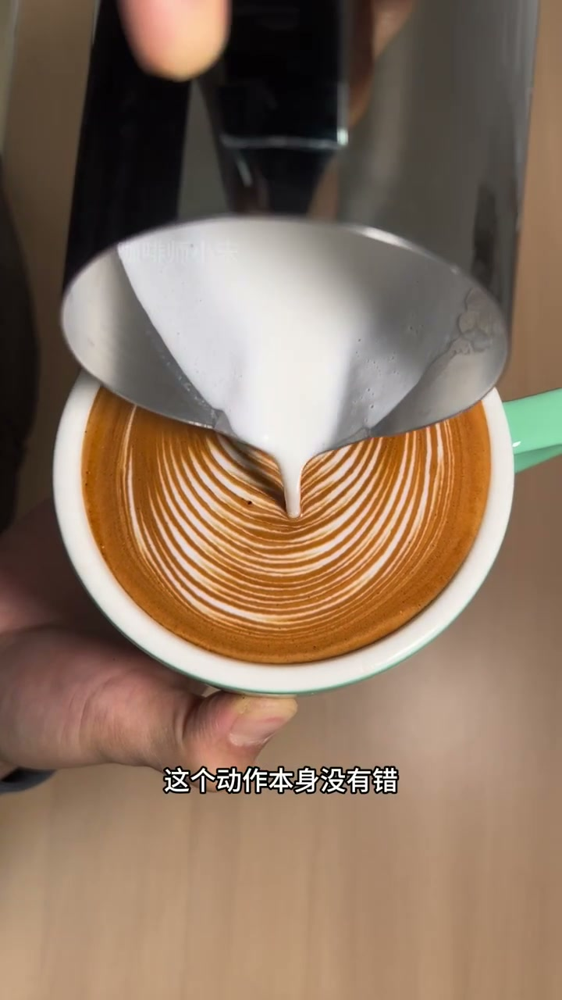
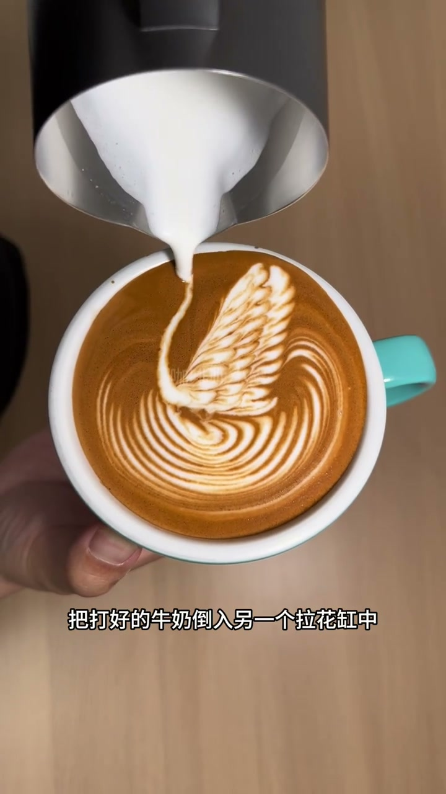
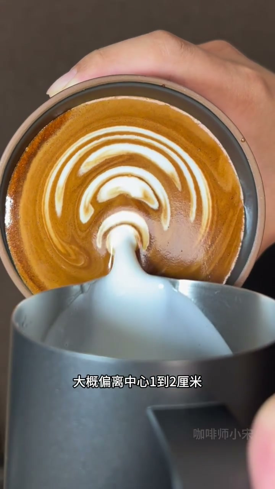

内容要点
拉花图案模糊不是手抖的问题，而是两个大多数人都在犯的关键错误。第一个错误：打完奶泡震缸后不"倒缸"就直接倒奶，上层厚奶泡像抹布一样先出来闷住图案。第二个错误：从杯子正中心注入牛奶开始晃动，导致中心点漂移。两个错误都有明确的物理原因和简单的修正方法，纠正后线条立刻变得锐利清晰。
知识结构
打完奶泡震缸后，上层是绵密奶泡、下层是稀牛奶。不倒缸混合就直接倒奶，上层的厚奶泡先出来，流动性差，接触咖啡表面就闷住所有线条。
想当然地瞄准杯中心注入晃动，但牛奶向四周均匀扩散而晃动力量不均匀，导致中心点一直漂移。正确做法是把注入点向远端偏1-2厘米。
打完奶泡先倒缸，让奶泡和牛奶充分混合成奶油状。注入点往远端偏1-2厘米，形成天然支撑墙。
错误一：不打倒缸=厚奶泡先闷住图案
[00:00-60:80]很多人打完奶泡后习惯把奶缸在桌上震几下消除大气泡，这本身没错。但问题在于震完之后直接倒奶！这时候奶缸里上层是很绵密的细奶泡，下面是较稀的牛奶，中间没有完全混合。你一开始倒出来的其实是上层那些比较厚的奶泡——这些奶泡密度大、流动性差，一旦接触咖啡表面就像一块麻布一样盖上去，把后面的线条全部闷住。正确做法是打完奶泡震缸之后做一个"倒缸"动作：把打好的牛奶倒入另一个拉花缸中，让上下层奶泡和牛奶充分混合，变成均匀的奶油状质地。判断标准：倾斜奶缸时流出的液体光滑连续，没有明显一坨一坨的感觉。


错误二：从正中心注入=中心点永远漂移
[60:80-120:70]新手常犯的第二个错误是把拉花缸对准杯子正中心就开始晃动。大家的想法是瞄准中心做图案肯定对称好看，但结果永远是线条往左偏或往右偏。问题出在物理规律上：从中心注入牛奶时牛奶向四周均匀扩散，但晃动的时候力量不均匀——往左晃左边牛奶多，往右晃右边牛奶多，导致图案中心点一直在漂移，永远找不到稳定的基准线。正确做法是把注入点稍微往杯子的远端（靠近拉花缸那一侧）偏1-2厘米。牛奶会优先向杯子一侧流动形成天然支撑墙，在这个基础上左右晃动线条就会被这堵墙挡住，不会再乱跑了。
